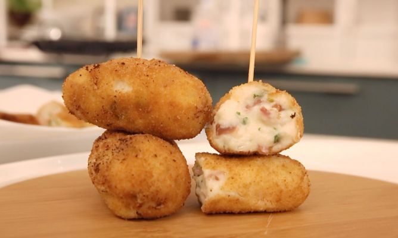
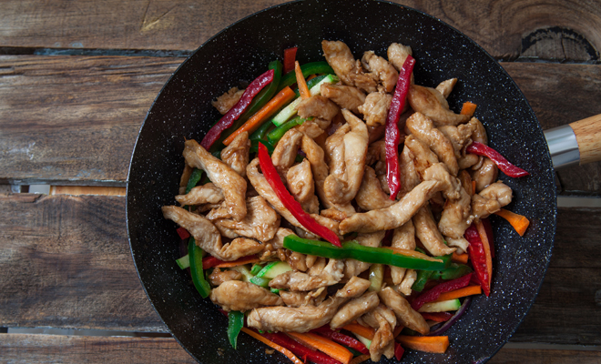

Food for Thought

- Corta la mantequilla en dados y ponla a derretir
Incorpora el jamón picado y saltéalo.
- Añade la harina, rehoga bien y vierte la leche poco a poco,Cocina la
bechamel durante 20 minutos.
- Cuando la masa esté fría, da forma a las croquetas.
- Pasalas por huevo y pan rallado y fríelas en aceite caliente.
- ¡Listo! Ya estan listas para comer
What to Eat
- Lava y trocea los tomates.
- Coloca los tomates en el vaso de tu licuadora.
- Exprime el medio limón e incorpóralo.
- Agrega un pellizco de sal.
- Licua hasta conseguir la textura adecuada. Añade agua en función de si te gusta
más o menos cremoso.
- ¡Listo! Ya tienes tu zumo de tomate preparado
Meal of the Week

- Corta las pechugas en finas lonchas con un cuchillo bien afilado
- Pon una sarten con un poco de aceite a calentar
- Pon las pechugas en la sarten y si quieres añade unos pimimentos
- Cuando tengan el color y la textura adecuada las sacamos de la sarten
- ¡Listo! Ya estan listas para comer